Aderhold A.R.C. · an ONI framework · Acceptance · Reliance · Collaboration
User manual
This manual covers Aderhold A.R.C.: the survey, scoring engine and automation that run an A.R.C. Gap Diagnostic from the first survey link to the client readout. It has three parts:
| Part | Kind of guide | Read it when |
|---|---|---|
| 1. Product guide | Reference | You want to know what the tool can do, and how each part works |
| 2. Training guide | Tutorial | You're new and want to run a diagnostic end to end, step by step |
| 3. Troubleshooting guide | Support | Something didn't work and you need the fix |
How to read it
Most sections are written in three layers, so readers with different backgrounds can each stop at the depth they need:
Every other picture in this manual comes from the demo engagement, Demo Company (synthetic data), engagement code DEMO. Its baseline staff campaign, DEMO-2026Q4, is the same 40-response data set as the Excel workbook; the midpoint, follow-up and leadership campaigns are synthetic additions that show the three-wave reports.
Keeping it current
This manual lives in the repository (docs/manual/) and is versioned with the engine. Screenshots of the survey and reports are captured from the demo campaign. Update the version line above when you release a new engine or instrument version, and refresh pictures whose screens have changed.
Part 1: Product guide
What Aderhold A.R.C. does, feature by feature. Each section starts in plain language, then gives the practitioner's view, then the technical detail.
1. What the tool is
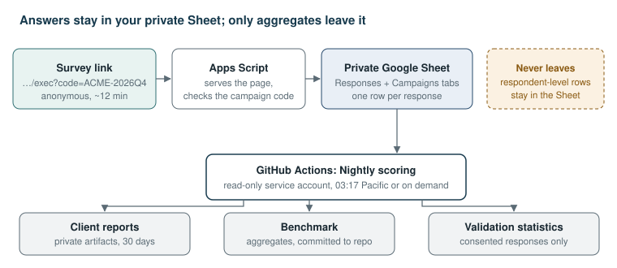
Respondent-level data never leaves the Sheet. GitHub reads it with a read-only key, holds it in memory during the run, and keeps only group-level results.
2. The A.R.C. framework
| Code | Dimension | Pillar | Failure signature |
|---|---|---|---|
| A1 | Purpose & narrative clarity | Acceptance | "They're replacing us" fills the silence |
| A2 | Role security & psychological safety | Acceptance | Quiet compliance, hidden non-use, shadow AI |
| A3 | Onboarding & enablement | Acceptance | Staff learning on nights and weekends |
| A4 | Demonstrated value | Acceptance | "Neat demo, not for my job" |
| R1 | Explainability & transparency | Reliance | Outputs nobody can defend |
| R2 | Trust calibration | Reliance | Over-trust or blanket distrust |
| R3 | Verification practice | Reliance | Rubber-stamping or redoing everything |
| R4 | Failure response ("flop protocol") | Reliance | One mistake permanently collapses trust |
| C1 | Workflow & role redesign | Collaboration | AI bolted onto old process; time saved disappears |
| C2 | AI direction competency | Collaboration | Poor instructions, poor results |
| C3 | Teaming norms | Collaboration | Friction between enthusiasts and skeptics |
| C4 | Expertise pipeline | Collaboration | Juniors never build real expertise |
| F1 | Accountability model | Foundation | Blame lands on the human alone |
| F2 | Right to override | Foundation | "Pressure to agree" with the machine |
| F3 | Human-AI measurement | Foundation | Leaders fly blind |
3. The Pulse Survey
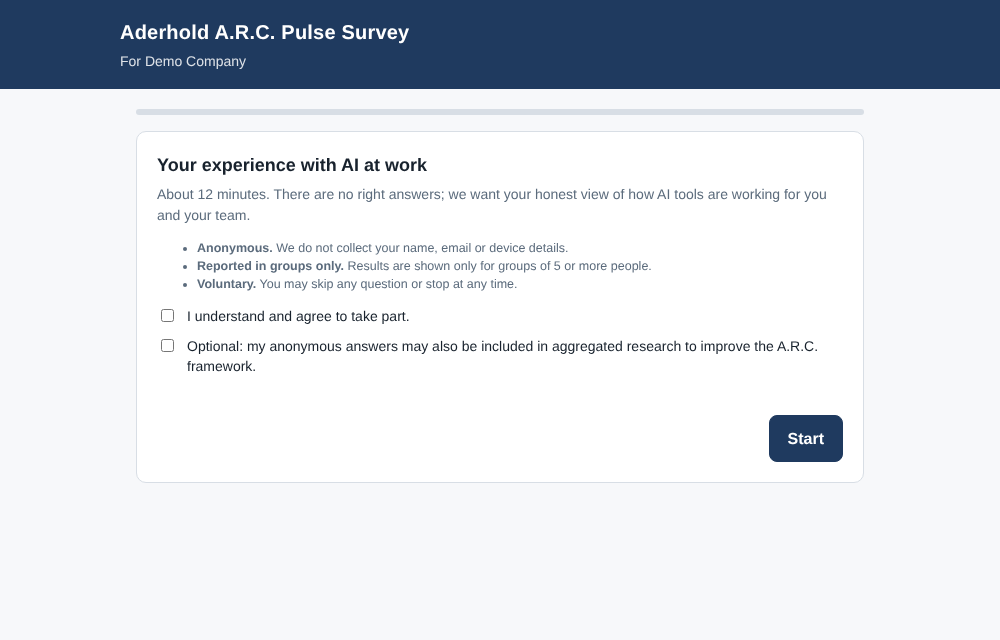
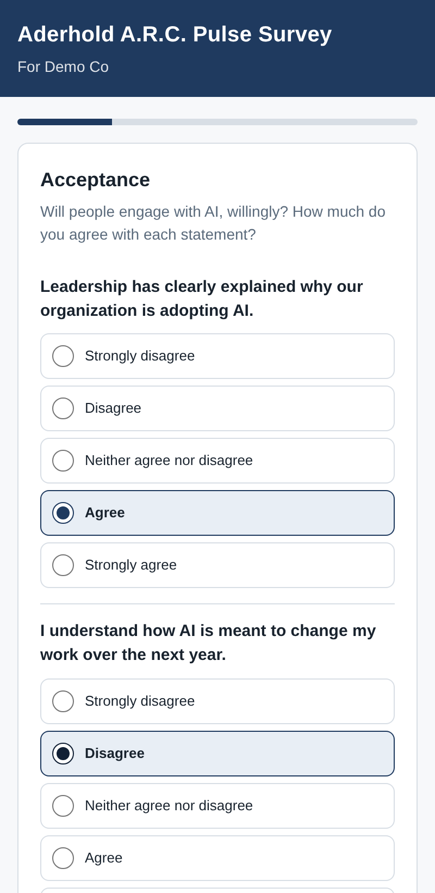
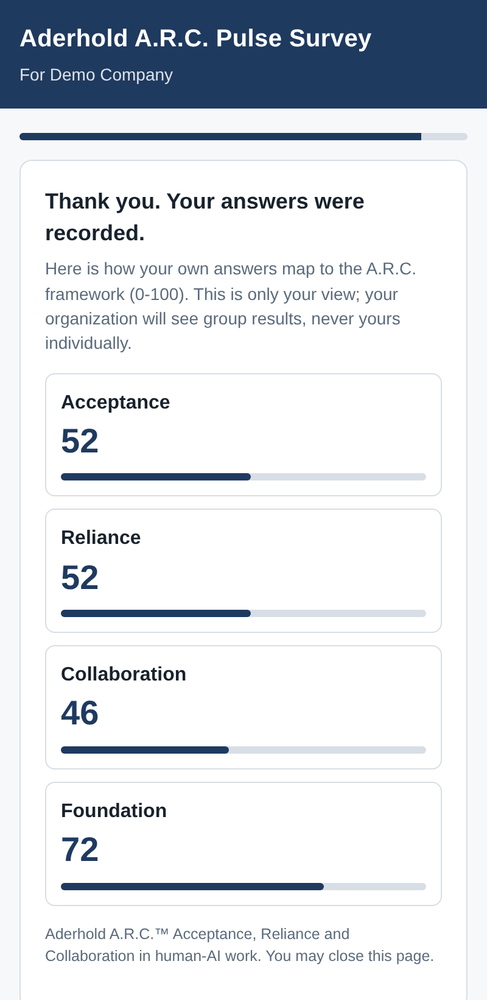
4. Campaigns and survey links
| Campaigns column | What to enter | If left blank |
|---|---|---|
code |
The link code, for example ACME-T1-STAFF |
Required |
display_name |
Client name shown on the survey header | No header line |
active |
TRUE / ticked while the link should accept answers |
Closed |
notes |
Anything for you | |
engagement |
The engagement this campaign belongs to, for example ACME |
The campaign code itself |
wave |
T1 baseline, T2 midpoint or T3 follow-up |
T1 |
audience |
staff or leader |
staff |
modules |
For T2/T3: the recommendations implemented, for example M3, M6, M7 |
No exposure questions |
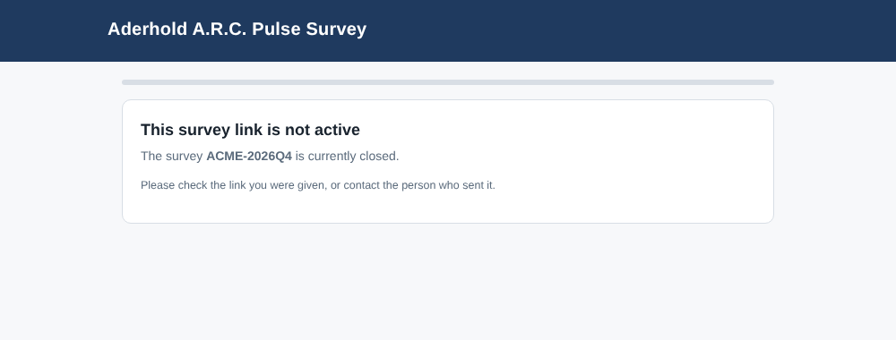
| Closed-link message | Cause |
|---|---|
| "This link is missing its survey code" | No ?code= on the link |
| "The survey code … was not recognized" | Code not in the Campaigns tab |
| "The survey … is currently closed" | Campaign row is not active |
5. Where responses live
6. Scoring
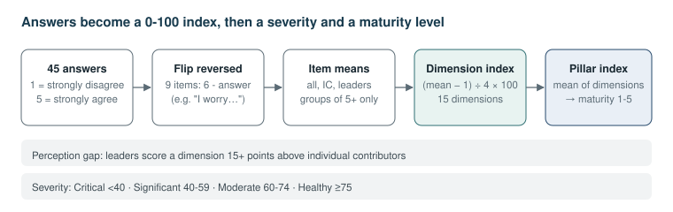
7. The Value Leakage (ROI) model
| Input | Where it comes from |
|---|---|
| Users (N), hours saved per week (H), loaded hourly cost (W) | Client: license count, pilot data, finance |
| Working weeks (T), healthy verification share (v*) | Defaults 46 and 20%; agree with client |
| Adoption, depth, verification, capture | Survey (or override) |
| Errors per year and cost per error | Client incident log |
| Turnover, AI-attributable share, salary, replacement cost | Client HR data; assumption flagged |
| Targets, haircut, engagement fee | You |
8. Client reports
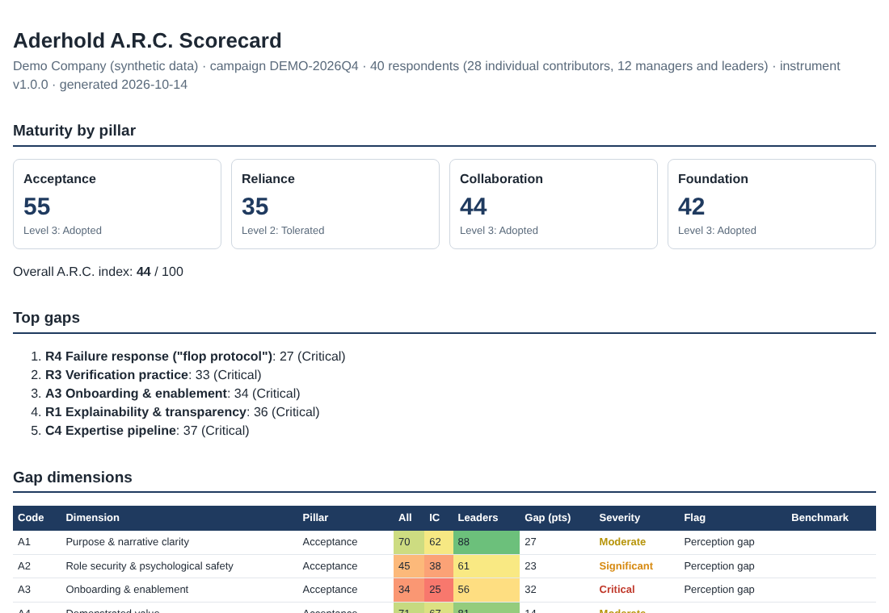
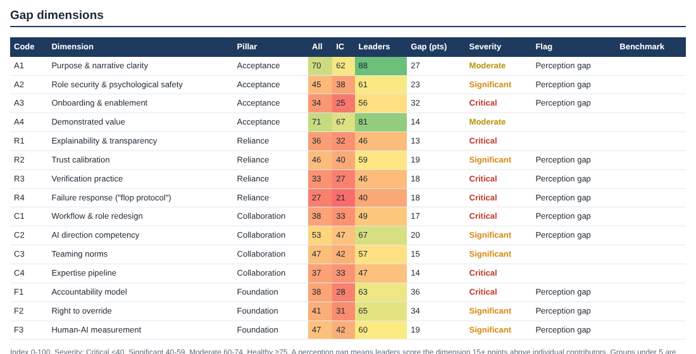
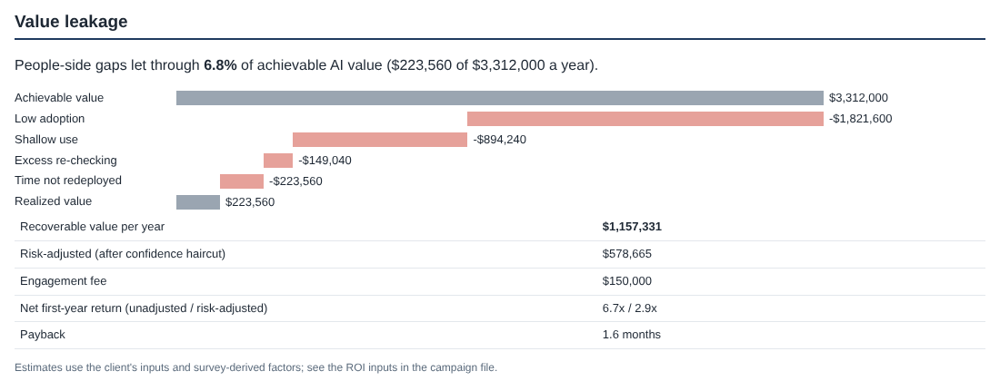
9. Engagements: three waves
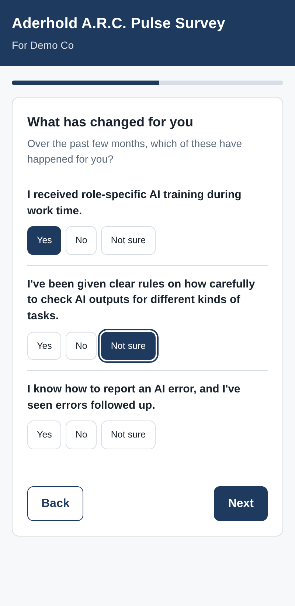
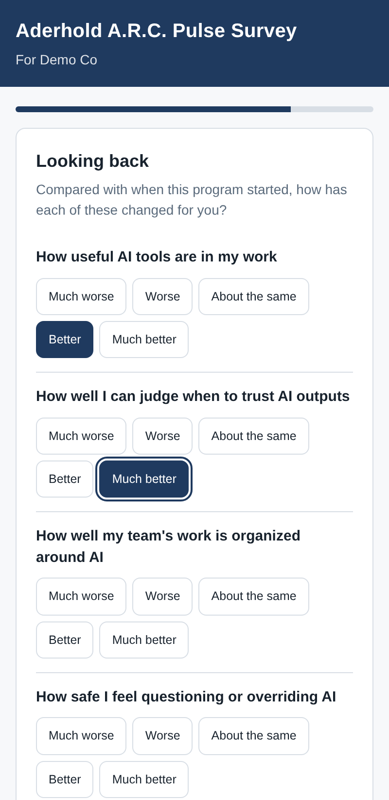
10. The leadership survey
11. The progress report
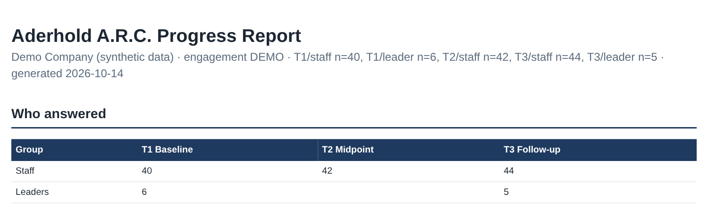
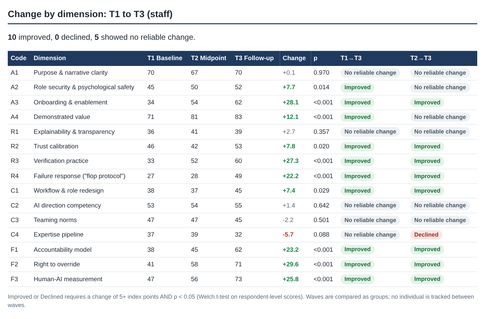
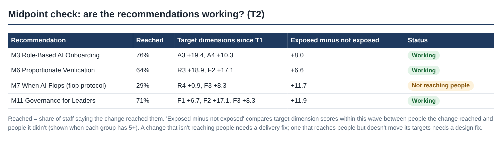
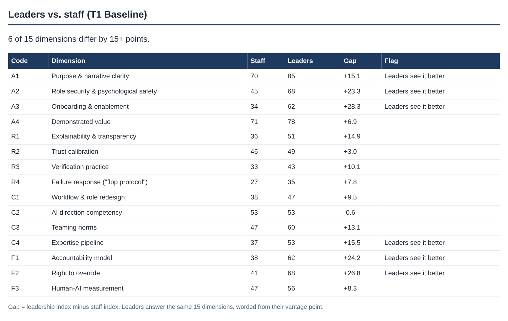
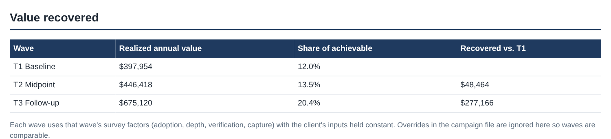
12. The nightly run
13. Benchmark across clients
14. Validation statistics
15. The Excel workbook
16. Data protection
17. Changing the instrument
18. Boundaries: what the tool will and won't do
| The tool will | The tool won't |
|---|---|
| Measure people-side gaps and estimate the value at stake | Prove causation or guarantee ROI |
| Show whether gaps closed between waves, and which recommendations reached people | Track any individual between waves |
| Flag where leaders and staff see things differently | Identify individuals, or let you |
| Build reports and a benchmark automatically | Decide the intervention: that's your judgment |
| Accumulate validation statistics | Claim the instrument is validated before the evidence exists |
| Keep respondent data in your private Sheet | Store raw responses in GitHub |
Appendix A: Commands
Run from the repository folder (pip install -r requirements-dev.txt first).
| Command | What it does |
|---|---|
python -m arc run --source sheets |
Score every campaign from the Google Sheet (needs the two secrets as environment variables) |
python -m arc run --source csv --path data/demo |
Score from CSV files (default; demo data) |
python -m arc run … --campaign ACME-2026Q4 |
Score one campaign only |
python -m arc run … --out reports --benchmark benchmark/summary.json |
Choose output folder and benchmark file |
python -m arc build-collector |
Regenerate collector/Items.gs from instrument/items.yaml |
python -m pytest -q |
Run the tests |
node tests/collector.test.js |
Test the Apps Script logic against a fake Sheet |
python tools/make_demo.py |
Regenerate the synthetic demo engagement |
Apps Script functions (choose in the function menu, then Run):
| Function | What it does |
|---|---|
setup |
Create or upgrade the Responses and Campaigns tabs, keep old-version responses in a renamed tab, add the test campaigns; safe to re-run |
checkSetup |
Log tabs, each campaign's code, active status, engagement, wave, audience and modules, and deployment notes |
Appendix B: Workflows
| Workflow | File | When it runs | What it does |
|---|---|---|---|
| CI | ci.yml |
Every push and pull request | Tests (engine and Apps Script), checks Items.gs is in sync, runs the demo end to end |
| Nightly scoring | nightly.yml |
Daily 03:17 Pacific, or Run workflow | Reads the Sheet, scores campaigns and engagements, uploads reports, commits the benchmark |
Appendix C: Scoring reference
| Item | Value |
|---|---|
| Scale | 1 Strongly disagree · 2 Disagree · 3 Neither · 4 Agree · 5 Strongly agree |
| Reverse-coded items | A2.2, A3.2, R1.3, R3.2, R3.3, R4.3, C4.2, F1.2, F2.2 |
| Index | (mean − 1) ÷ 4 × 100 |
| Severity | Critical < 40 · Significant 40–59 · Moderate 60–74 · Healthy ≥ 75 |
| Maturity | 1 Imposed · 2 Tolerated · 3 Adopted · 4 Calibrated · 5 Integrated (bands of 20) |
| Perception gap | Leaders − IC ≥ 15 points |
| Minimum group size | 5 staff · 3 leaders |
| Improved / Declined | ±5 index points or more and p < 0.05 (Welch's t-test) |
| Leader-vs-staff flag | Leader − staff ≥ 15 or ≤ −15 points |
| Recommendation not reaching people | Under 50% answer yes |
| Response counted | At least 23 of 45 items answered |
| Alpha target / item-total flag | ≥ 0.70 / < 0.30 |
| EFA threshold | 200 complete consented responses |
Appendix D: Glossary
| Term | Meaning |
|---|---|
| Campaign | One survey link for one audience in one wave, identified by a code such as ACME-T1-STAFF |
| Engagement | One client program, grouping its campaigns across waves and audiences |
| Wave | T1 Baseline, T2 Midpoint or T3 Follow-up |
| Audience | Staff or leader; leaders get the leadership version of the survey |
| Exposure check | T2/T3 questions asking whether each implemented recommendation reached the respondent |
| Leader-vs-staff gap | Leader index minus staff index for a dimension |
| No reliable change | A move under 5 points, or one that isn't statistically reliable |
| Dimension | One of the 15 measured gaps (A1–F3) |
| Pillar | Acceptance, Reliance, Collaboration, or the Foundation |
| Index | A 0–100 score for a dimension or pillar |
| Perception gap | Leaders scoring a dimension 15+ points above individual contributors |
| Suppressed | Hidden because the group has fewer than 5 respondents |
| Value leakage | The difference between achievable and realized AI value |
| Verification drag | Share of AI-saved time spent re-checking or redoing outputs |
| Capture | Share of freed time redirected to valuable work |
| Research consent | The optional box allowing anonymous answers in aggregated research |
| Benchmark | Aggregated scores across client campaigns |
| Artifact | A file bundle attached to a GitHub Actions run (here, the reports) |
| Secret | An encrypted value stored in GitHub (here, the Sheet ID and service-account key) |
| Service account | A Google robot account with read-only access to the Sheet |
| Deployment / web app URL | The published version of the Apps Script survey and its /exec address |
Part 2: Training guide
A step-by-step walkthrough, from first setup to a client readout, using the demo campaign. Work through it in order the first time. Each module says what you'll do, why it matters, how to do it, and how to check it worked.
You'll need:
- the business Google account (ONI.GRC.ARC@gmail.com), signed in alone in its own browser window or Chrome profile
- access to the repository
Baderholdjr/aderhold-arc - about an hour for Modules 1–3; they're one-time
You don't need a terminal. Every step can be done from Google and the GitHub website.
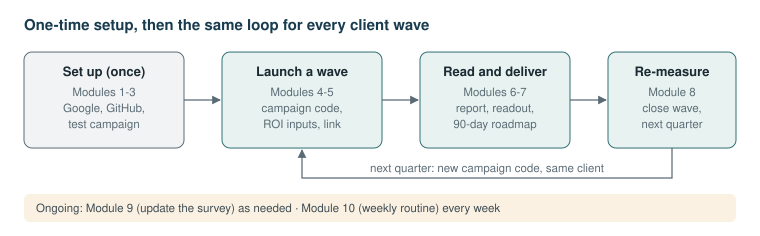
Modules
- The golden rules
- Set up the survey
- Connect GitHub to the Sheet
- Run a test campaign
- Launch a client wave
- Set the ROI inputs with the client
- Read a client report
- Deliver the readout
- Run the midpoint and follow-up
- Update the survey
- Your weekly routine
Module 0: The golden rules
- Anonymity is non-negotiable. Never ask for names, never report a group under 5, never share the raw Sheet.
- One account, one window. Do all Google setup signed in only as ONI.GRC.ARC@gmail.com. Several Google accounts in one browser cause "unable to open the file" errors.
- The link ends
?code=, never?c=. Google reservesc. - Change the source, not the output. Questions live in
instrument/items.yaml; reports are rebuilt from the Sheet every night. Editing a report is lost at the next run. - After changing Apps Script, publish a new version. A deployment keeps serving the old code until you do.
- Quote the risk-adjusted value. Under-promise in proposals; the re-measure proves the rest.
Module 1: Set up the survey
Goal: a working survey link that writes anonymous responses to your private Sheet.
- Create the Sheet. At sheets.google.com, create a blank spreadsheet named Aderhold A.R.C. Responses.
- Open Apps Script. In the Sheet: Extensions → Apps Script.
-
Paste the four files. For each, open it on GitHub, click the copy icon at the top right of the code, and paste:
Code.gs: replace everything in the default file (collector/Code.gs)Items: + → Script, name itItems(collector/Items.gs)Survey: + → HTML, name it exactlySurvey, capital S (collector/Survey.html)appsscript.json: first tick Project Settings → Show "appsscript.json", then replace it (collector/appsscript.json)
Click Save.
-
Run setup. Choose setup in the function menu and click Run. Google warns that the app isn't verified, because it's your own script: click Advanced → Go to (project) → Allow.
-
Deploy. Deploy → New deployment → gear → Web app. Set Execute as: Me, Who has access: Anyone. Click Deploy and copy the Web app URL (ends in
/exec) with the Copy button.
Check it worked:
- The Sheet now has Responses and Campaigns tabs. Campaigns lists four active test campaigns:
TEST-0001(staff baseline),TEST-LEAD(leadership),TEST-T2(midpoint) andTEST-T3(follow-up). - In a private/incognito window,
<Web app URL>?code=TEST-0001shows the welcome screen.
Module 2: Connect GitHub to the Sheet
Goal: the nightly run can read the Sheet, read-only.
- Create a Google Cloud project. At console.cloud.google.com (as ONI.GRC.ARC), create a project named
aderhold-arcand select it. Skip any billing prompt; nothing here needs it. - Enable the Sheets API. Search Google Sheets API and click Enable.
- Create the service account. Search Service Accounts → Create service account, name
arc-reader, Create and continue → Done (no roles). - Create a key. Open the account → Keys → Add key → Create new key → JSON. A
.jsonfile downloads. Treat it like a password. - Share the Sheet. In the Sheet, click Share, paste the service account's email, set Viewer, untick Notify, and click Share.
-
Add the GitHub secrets. In the repository: Settings → Secrets and variables → Actions → New repository secret:
ARC_SHEET_ID: the long part of the Sheet's address between/d/and/editGOOGLE_SERVICE_ACCOUNT: the entire contents of the.jsonfile
-
Delete the key file from your computer, or store it in a password manager.
Check it worked: Actions → Nightly scoring → Run workflow. The run is green and its summary lists TEST-0001.
Module 3: Run a test campaign
Goal: see a complete report before any client does.
- Submit test responses. Open
<Web app URL>?code=TEST-0001in a private window and complete the survey at least 10 times: at least 5 as Individual contributor and 5 as People manager or Senior leader, so both group columns appear. Vary your answers. - Give TEST-0001 ROI inputs (optional). In GitHub, copy
campaigns/_TEMPLATE.yamltocampaigns/TEST-0001.yaml(Add file → Create new file, paste, editclient:) and commit. - Run the workflow. Actions → Nightly scoring → Run workflow, optionally entering
TEST-0001as the campaign. - Download the report. Open the run, scroll to Artifacts, and download
arc-reports-…. OpenTEST-0001/report.html. -
Try the other survey versions. Open each link once and check what's different:
?code=TEST-LEAD: the leadership version. No role question, statements are about the organization, and there's a Your leadership view page.?code=TEST-T2: the midpoint. A What has changed for you page asks about M3, M6 and M7.?code=TEST-T3: the follow-up. The same page plus Looking back.
-
See a progress report (optional). Submit 3+ responses on
TEST-LEADand 5+ onTEST-T3, then re-run the workflow. The artifact now hasENGAGEMENT-TEST/engagement.html.
Check it worked: the report shows pillar maturity, top gaps and all 15 dimensions with IC and leaders columns filled. With fewer than 5 responses it says suppressed, which is correct.
Module 4: Launch a client wave
Goal: live baseline (T1) links for the client's staff and leaders.
- Pick an engagement code and campaign codes: the client's short name for the engagement (
ACME), and one campaign per audience and wave, for exampleACME-T1-STAFFandACME-T1-LEAD. -
Activate them. In the Sheet's Campaigns tab add a row for each:
code display_name active notes engagement wave audience modules ACME-T1-STAFFAcme TRUE ACME T1 staff ACME-T1-LEADAcme TRUE ACME T1 leader -
Create the engagement file. In GitHub, copy
engagements/_TEMPLATE.yamltoengagements/ACME.yamland fill in the client name and wave dates. ROI inputs can wait for Module 5. - Test both links in a private window:
<Web app URL>?code=ACME-T1-STAFFand?code=ACME-T1-LEAD. The header shows For Acme; the leader link opens on Leadership view. -
Send it through the sponsor. The client's executive sponsor sends the link, not you. Suggested message:
We're running a short, anonymous survey (about 12 minutes) on how AI tools are working for you and your team. There are no right answers. Nobody, including the consultant, can see who said what, and results are only reported for groups of 5 or more. Please complete it by [date]: [link]
-
Send the leader link separately, to directors and above (or whoever owns AI decisions). Tell them their results are reported only as a group of 3 or more, and ask them not to put identifying details in comments.
- Plan for response rate. Aim for 60%+ of AI-affected staff, with a reminder from the sponsor at the halfway point.
Module 5: Set the ROI inputs with the client
Goal: a value estimate the client's finance team will accept.
- Gather the client numbers: licensed users, loaded hourly cost, AI tool cost, expected hours saved per week (from their pilot or vendor), material AI errors per year and their typical cost, voluntary turnover and average salary.
- Agree the assumptions out loud: healthy verification share (default 20%), the AI-attributable share of turnover (default 10%), targets and the confidence haircut (default 50%).
- Edit
engagements/<ENGAGEMENT>.yaml(orcampaigns/<CODE>.yamlfor a one-off diagnostic) underroi:. Leave the fouroverrides:as~so the survey supplies adoption, depth, verification and capture; override only with better data, such as license telemetry for adoption. - Re-run the workflow for that campaign.
Module 6: Read a client report
Goal: know what the report is telling you before you present it.
- Start with the pillar cards. The lowest pillar is your headline. Level 2 (Tolerated) or below is common in early rollouts.
- Read the top five gaps. These usually become the Activation Sprint scope.
- Scan the Flag column. Every Perception gap is a conversation: leaders believe something is solved that staff say isn't. These land hard in readouts; present them as a shared blind spot, not blame.
- Check the behavioral signals. Under 5 training hours and high own-time learning together confirm an onboarding deficit (A3). High re-checking with low R4 points to a trust collapse after errors.
- Read the value waterfall. The biggest red bar is where the money is. Early rollouts lose most at adoption and depth; mature ones at re-checking and capture.
- Open the leadership report (
ACME-T1-LEAD/report.html) and, once both exist, the progress report (ENGAGEMENT-ACME/engagement.html). Its Leaders vs. staff table is the sharpest evidence in the readout: a +15 Leaders see it better on F1 (blame) or A3 (onboarding) is a common, important finding.
Module 7: Deliver the readout
Goal: a decision on next steps.
- Structure (45–60 minutes): the headline (pillar maturity and value at stake) · top gaps with the evidence · leader-vs-staff and perception gaps · recommended interventions · 90-day roadmap with the midpoint and follow-up dates · decision.
- Map gaps to interventions using the playbook's catalog. For example: A3 → M3 Role-Based Onboarding; R3/R4 → M6 Proportionate Verification and M7 the flop protocol; F1/F2 → M11 Governance for Leaders; C2 → M8 the AI Direction Ladder.
- Quote the risk-adjusted value and the engagement fee side by side.
- Agree the measurement plan: which recommendations (modules) will be implemented, when they go live, and the T2 and T3 dates. The modules you agree here go in the
modulescolumn at T2 and T3. - Share the report as the HTML file or the Excel scorecard. Never share the Sheet or comments that could identify anyone.
Module 8: Run the midpoint and follow-up
Goal: adjust the program while it runs, then prove whether it worked.
- Close the baseline: set
activetoFALSEon the T1 rows. The links then show "currently closed". Download and file the baseline reports; artifacts expire after 30 days. -
Midpoint (T2), 6–10 weeks after the recommendations go live. Add a row, listing the modules actually implemented:
code display_name active engagement wave audience modules ACME-T2-STAFFAcme TRUE ACME T2 staff M3, M6, M7, M11 A leader midpoint is optional; add
ACME-T2-LEADthe same way if leaders' views are moving fast. -
Read the midpoint check in the progress report. For each recommendation: Not reaching people means fix delivery (relaunch, manager briefings, schedule time); Reaching people, not yet moving means give it time or redesign it. Agree the adjustments with the sponsor and note them in the engagement file.
- Follow-up (T3), 3–6 months after T1. Add
ACME-T3-STAFFandACME-T3-LEADwith waveT3and the same modules (plus any added after the midpoint). Use the same population as the baseline. - Read the change by dimension. Report Improved and Declined as they are, and No reliable change as "no measurable change yet". A decline is a finding, not a failure: name it and propose a fix.
- Close out: set every row to
FALSE, download the final progress report, and put the value recovered and the dimension changes into the case study.
Check it worked: the progress report shows a Change by dimension table for T1 to T3 and a check table for each wave with modules.
Module 9: Update the survey
Goal: a change to the Apps Script code or the questions, live without breaking anything.
- Code-only change (for example a fix to
Code.gsorSurvey.html): paste the new file into Apps Script, Save, then Deploy → Manage deployments → pencil → Version: New version → Deploy. The URL stays the same. - Question change: follow Product guide §17. In short: edit
items.yaml, bump the version,build-collector, paste the newItems.gs, runsetup(it moves old responses to their own tab), and deploy a new version.
Upgrading from v1.0 to v1.1 (three waves and the leadership survey):
- In Apps Script, replace the contents of
Code.gs,ItemsandSurveywith the current files from the repository'scollector/folder. Save. - Run setup. It renames the existing Responses tab to
Responses v1.0.0, creates a new Responses tab, adds theengagement,wave,audienceandmodulescolumns to Campaigns, and adds the three new test campaigns. Existing campaign rows keep working: blank columns mean a staff baseline. - Deploy → Manage deployments → pencil → Version: New version → Deploy. The URL stays the same.
- Test
?code=TEST-LEAD,?code=TEST-T2and?code=TEST-T3in a private window.
The nightly run reads the new Responses tab and any earlier-version tabs, so responses collected under v1.0 are still scored, as staff baseline responses.
Check it worked: open a test link in a private window and confirm the change.
Module 10: Your weekly routine
| When | What |
|---|---|
| Monday | Check Actions: last night's run is green; note any warnings |
| During a live wave | Look at response counts in the run summary; ask the sponsor for a reminder if under target |
| After a wave closes | Download the artifact; build the readout |
| Monthly | Review benchmark/summary.json: campaigns included, reliability status |
| Quarterly | Re-verify statistics quoted in sales materials; plan re-measures |
Appendix: screenshots to add
These screens sit behind a Google or GitHub sign-in. Capture each one from your own account, save it in docs/manual/images/ under the name given, and replace the matching "Screenshot to add" note with .
| # | Screen | Save as |
|---|---|---|
| 1 | The Sheet's Responses tab with test rows | g-responses.png |
| 2 | Apps Script New deployment dialog (Web app, Me, Anyone) | g-deploy.png |
| 3 | GitHub Settings → Secrets and variables → Actions listing both secrets | gh-secrets.png |
| 4 | Actions → Nightly scoring run summary | gh-nightly.png |
| 5 | The run's Artifacts section | gh-artifacts.png |
| 6 | Apps Script Execution log after checkSetup |
g-checksetup.png |
| 7 | The Sheet's Campaigns tab with the eight columns and the test campaigns | g-campaigns.png |
Part 3: Troubleshooting guide
Find your symptom in the index, then follow the entry. Each entry gives:
- What you see: the message or behaviour
- Why: the cause in plain terms
- Fix: the steps
Entries marked (seen in the pilot) happened while setting up the system in October 2026, so the fix is proven.
Before anything else
- Read the exact message. The survey's closed-link page and
checkSetupsay what's wrong. - Use a private window, signed in as nobody, to test what respondents see.
- Find the failed step. In Actions, open the failed run, click the job, then expand the step with the red ✗. The last lines usually say what happened.
- Re-run. Some failures are transient (Re-run all jobs).
Index
| Symptom | Entry |
|---|---|
| "Sorry, unable to open the file at this time" on every link with a code | T-01 |
"Sorry, unable to open the file" on the link checkSetup printed |
T-02 |
| "Sorry, unable to open the file" only in your normal browser | T-03 |
| Survey won't open from a Workspace or email-verified account | T-04 |
| "This survey link is not active" | T-05 |
| "No HTML file named Survey was found" | T-06 |
| Changes to the survey don't appear | T-07 |
| "Google hasn't verified this app" | T-08 |
A new tab Responses v1.0.0 appeared after setup |
T-09 |
| Respondent sees "Please answer at least half…" or "Please select your role" | T-10 |
| Nightly run says secrets are not set | T-11 |
| Nightly run fails reading the Sheet | T-12 |
| "Tab … has columns the instrument does not define" | T-13 |
| Nightly run fails at "Commit refreshed benchmark" | T-14 |
| "Node.js 20 is deprecated" warning | T-15 |
| Report says suppressed or shows n<5 | T-16 |
| Report has no Value leakage section / "ROI skipped" | T-17 |
| CI fails: "collector/Items.gs is out of date" | T-18 |
| A campaign is missing from the run summary | T-19 |
| Artifacts are gone | T-20 |
| Leader results show n<3 or suppressed | T-21 |
| The midpoint or follow-up survey has no What has changed page | T-22 |
| No progress report, or a wave is missing from it | T-23 |
| Scores went up, but the report says No reliable change | T-24 |
| A leader link shows the staff survey (or the reverse) | T-25 |
Survey link
T-01: "Sorry, unable to open the file" on every link with a code
What you see: Google's page Sorry, unable to open the file at this time. Please check the address and try again. on any link ending ?c=…, even in a private window, while the bare /exec link opens. (Seen in the pilot.)
Why: Google reserves the URL parameters c and sid for Apps Script. Any web app link using them is rejected before your code runs.
Fix: use ?code=. Make sure Apps Script has the current Code.gs (it reads e.parameter.code) and you've deployed a new version.
T-02: The link ends in /dev
What you see: the same Google error, on a link ending /dev. (Seen in the pilot.)
Why: /dev is the private test link. Only the owner can open it, signed in. When checkSetup runs in the editor, Google reports this link.
Fix: get the public link from Deploy → Manage deployments → (your deployment) → Web app URL → Copy. It ends in /exec and has a different, longer ID. Don't just change /dev to /exec.
T-03: Several Google accounts in one browser
What you see: the Google error in your normal browser, but the survey works in a private window.
Why: a known Apps Script problem when more than one Google account is signed in.
Fix: test in a private window, or use a Chrome profile signed in only as ONI.GRC.ARC. Respondents are rarely affected.
T-04: Workspace or email-verified account
What you see: the survey won't open for outsiders when the project is owned by a Google Workspace or email-verified Workspace account. (Seen in the pilot.)
Why: Workspace sharing settings can block anonymous access. In the pilot, the root cause turned out to be T-01, but the project was moved to a dedicated Gmail account anyway, to keep business data off personal accounts.
Fix: own the Sheet and Apps Script with ONI.GRC.ARC@gmail.com. If you must use Workspace: Admin console → Apps → Google Workspace → Drive and Docs → Sharing settings → Sharing options → allow sharing outside the organization.
T-05: "This survey link is not active"
What you see: the survey's own closed page. It states the reason. (Seen in the pilot.)
Fix by reason:
- Missing its survey code: add
?code=<CODE>to the link. - Code not recognized: add the code to the Campaigns tab, spelled the same (case doesn't matter).
- Currently closed: set
activetoTRUE(or tick the box).
Run checkSetup to see exactly what the script sees.
T-06: "No HTML file named Survey"
What you see: an Apps Script error mentioning Survey. (Seen in the pilot: a file was created as survey.html; renaming it to Survey prevents this error.)
Why: file names are case-sensitive; the code loads Survey.
Fix: in Apps Script, hover over the file, ⋮ → Rename to Survey, Save, and deploy a new version.
T-07: Changes don't appear
What you see: you pasted new code, but the live survey behaves the old way.
Why: a deployment serves a frozen version of your files.
Fix: Deploy → Manage deployments → pencil → Version: New version → Deploy. The URL doesn't change.
T-08: "Google hasn't verified this app"
What you see: a warning when you run setup or deploy for the first time.
Why: it's your own unpublished script. Respondents never see this.
Fix: Advanced → Go to (project name) (unsafe) → Allow. The script asks only for access to this one spreadsheet.
T-09: setup renamed the Responses tab
What you see: after running setup, a tab such as Responses v1.0.0 holds your earlier answers and a new, empty Responses tab has appeared. The log says Previous responses kept in tab …
Why: the instrument version changed (for example the v1.1 upgrade). Mixing column layouts in one tab would corrupt scoring, so setup keeps the old rows in their own tab.
Fix: none needed. Don't rename or delete the old tab: the nightly run reads it too. Make sure you deployed a new version afterwards (T-07).
T-10: A respondent can't submit
What you see: Please answer at least half of the statements or Please select your role.
Why: responses with too little data can't be scored, and role drives the leaders vs. IC comparison.
Fix: none needed; the respondent goes back and completes it. If many people report it, check the sponsor's message explains that every question can be skipped except role.
Nightly run
T-11: Secrets not set
What you see: the run finishes with the warning ARC_SHEET_ID / GOOGLE_SERVICE_ACCOUNT secrets are not set yet.
Fix: complete Module 2, step 6. Secret names must match exactly.
T-12: The run can't read the Sheet
What you see: Score campaigns fails with PERMISSION_DENIED, SpreadsheetNotFound or 403, or a JSON error.
Why: the Sheet isn't shared with the service account, the Sheet ID is wrong, the Sheets API isn't enabled, or the key was pasted incompletely.
Fix:
- In the Sheet's Share list, check the
arc-reader@…email is there as Viewer. - Check
ARC_SHEET_IDis only the ID, not the whole URL. - Check the Google Sheets API is enabled in the Cloud project.
- Re-paste
GOOGLE_SERVICE_ACCOUNTwith the whole file, from{to}.
T-13: Unknown Sheet columns
What you see: Tab '…' has columns the instrument does not define.
Why: someone added or renamed a column in a Responses tab, or the Sheet is on a newer instrument than the repo. Another tab whose name starts Responses v is also read, so don't use that name for anything else.
Fix: undo the column change in the Sheet, or update instrument/items.yaml in the repo to match the deployed version.
T-14: The benchmark commit fails
What you see: the run is red at Commit refreshed benchmark, though scoring and reports succeeded. (Seen in the pilot.)
Why: the repository changed while the run was working, so the push was rejected.
Fix: already fixed. The step now rebases, retries and warns instead of failing. If the warning repeats, check Settings → Actions → General → Workflow permissions is Read and write. The benchmark is still in the reports artifact.
T-15: Node.js 20 deprecated
What you see: a warning that actions target Node.js 20. (Seen in the pilot.)
Fix: already fixed; the workflows use the v6 actions on Node 24. If it returns after a GitHub change, bump actions/checkout, actions/setup-python and actions/upload-artifact to their latest major versions.
Reports
T-16: Suppressed or n<5
What you see: Fewer than 5 responses: results suppressed, or n<5 in the IC or Leaders columns. (Seen in the pilot.)
Why: the anonymity rule working as designed.
Fix: collect more responses. For leaders vs. IC comparisons, each group needs 5 or more. For the leadership survey, see T-21.
T-17: No Value leakage section
What you see: the report has scores but no ROI section, or the run log says ROI skipped.
Why: there is no campaigns/<CODE>.yaml with a roi: block, or a factor has neither a survey value nor an override.
Fix: create the campaign file from the template (Module 5) and re-run.
T-18: Items.gs out of date
What you see: CI fails with collector/Items.gs is out of date.
Why: instrument/items.yaml changed without regenerating the survey's question file.
Fix: run python -m arc build-collector, commit collector/Items.gs, and paste it into Apps Script.
T-19: A campaign is missing
What you see: a campaign with responses isn't in the run summary.
Why: its responses were dropped in cleaning (under half the items answered), or the code in the Sheet differs from the one you expect.
Fix: look at the campaign column in the Responses tab; codes are stored upper case.
T-20: Artifacts expired
What you see: an old run's Artifacts section is empty.
Why: reports are kept 30 days, deliberately.
Fix: re-run the workflow for that campaign; reports rebuild from the Sheet. Download and file final reports at the end of each wave.
Waves and leadership
T-21: Leader results suppressed
What you see: a leader campaign report says suppressed, or the progress report has no Leaders vs. staff section.
Why: fewer than 3 leaders responded. Leadership groups are small, so the threshold is 3 rather than 5, but below that a leader could be identified.
Fix: ask the sponsor to remind leaders. If the client has only one or two leaders in scope, don't run a leader campaign; interview them instead and say so in the readout.
T-22: No exposure questions
What you see: respondents on a T2 or T3 link don't get the What has changed for you page, or the progress report has no midpoint/follow-up check.
Why: the campaign's modules cell is blank or uses codes the survey doesn't know, or wave is blank (which means T1).
Fix: in the Campaigns tab, set wave to T2 or T3 and list modules as M3, M6, M7 (M1–M12; separators don't matter). Run checkSetup: each campaign's line shows the modules it found. No redeploy is needed for Campaigns tab changes.
T-23: No progress report
What you see: the artifact has campaign reports but no ENGAGEMENT-… folder, or a wave you ran is missing from it.
Why: a progress report needs two or more groups (wave and audience) in the same engagement. Usually the engagement cell differs between rows (for example ACME and Acme Corp), or is blank, so each campaign becomes its own engagement. A group that is suppressed appears in Who answered but is left out of comparisons.
Fix: give every campaign of the engagement the same engagement value. Answers already submitted keep the engagement they were recorded with, so fix it before launch; if it's already wrong, contact support to correct the rows rather than editing the Responses tab by hand.
T-24: No reliable change
What you see: a dimension's score rose (or fell) a few points between waves, but its status is No reliable change.
Why: a change counts only if it's at least 5 index points and statistically reliable (p < 0.05). Small groups and spread-out answers make smaller moves indistinguishable from noise.
Fix: report it honestly as "no measurable change yet". If the client needs finer detail, raise response rates at the next wave; larger groups detect smaller changes.
T-25: Wrong survey version
What you see: a leader link shows Your experience with AI at work (the staff intro), or a staff link shows the leadership questions.
Why: the audience cell for that campaign is blank, misspelled, or set to the other value. Anything other than leader means staff.
Fix: correct the audience cell. Answers already submitted keep the audience they were recorded with.
When you need help
Collect: the run link (or the survey link and the exact message), what you expected, and the checkSetup log. Never send respondent data or the service-account key.